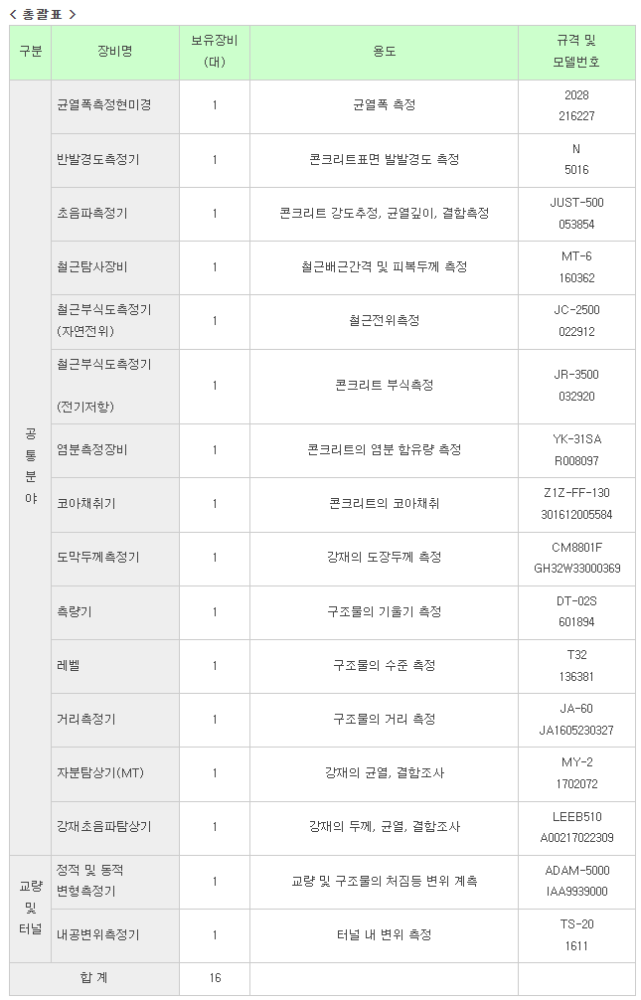
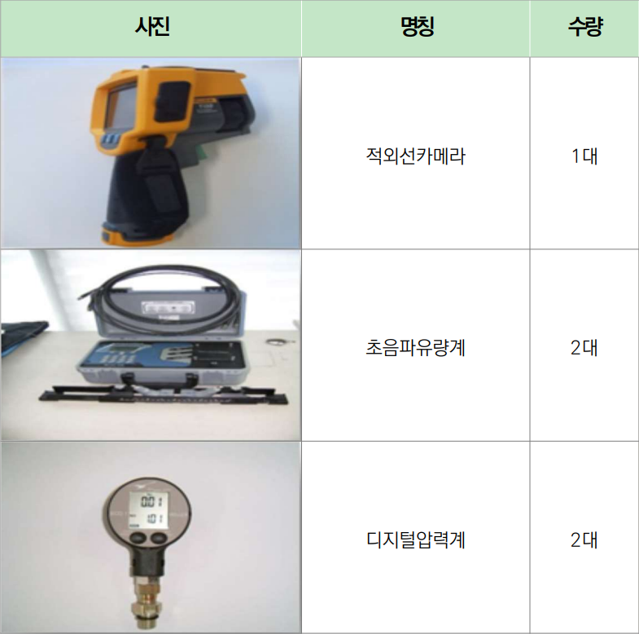
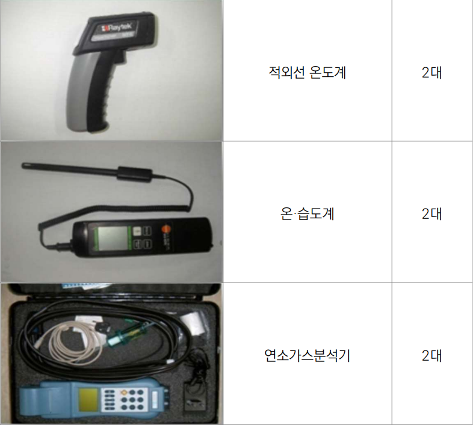
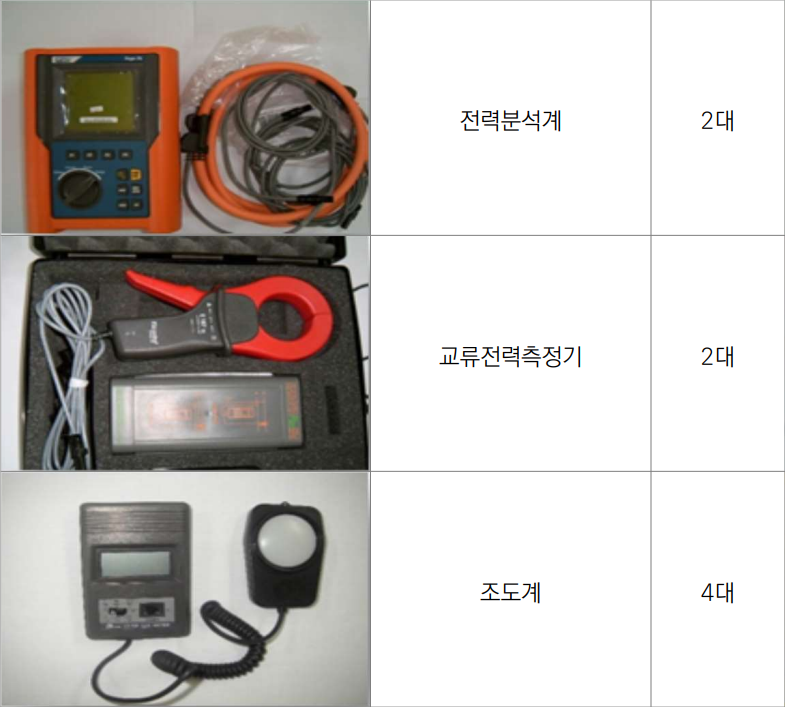
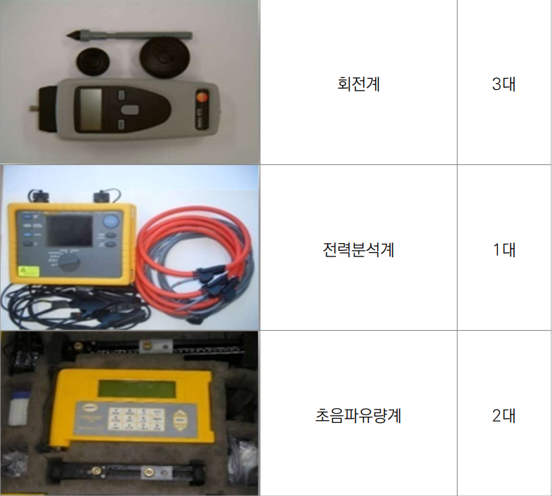
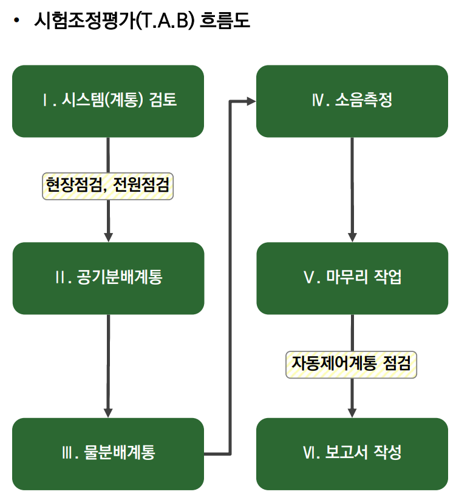
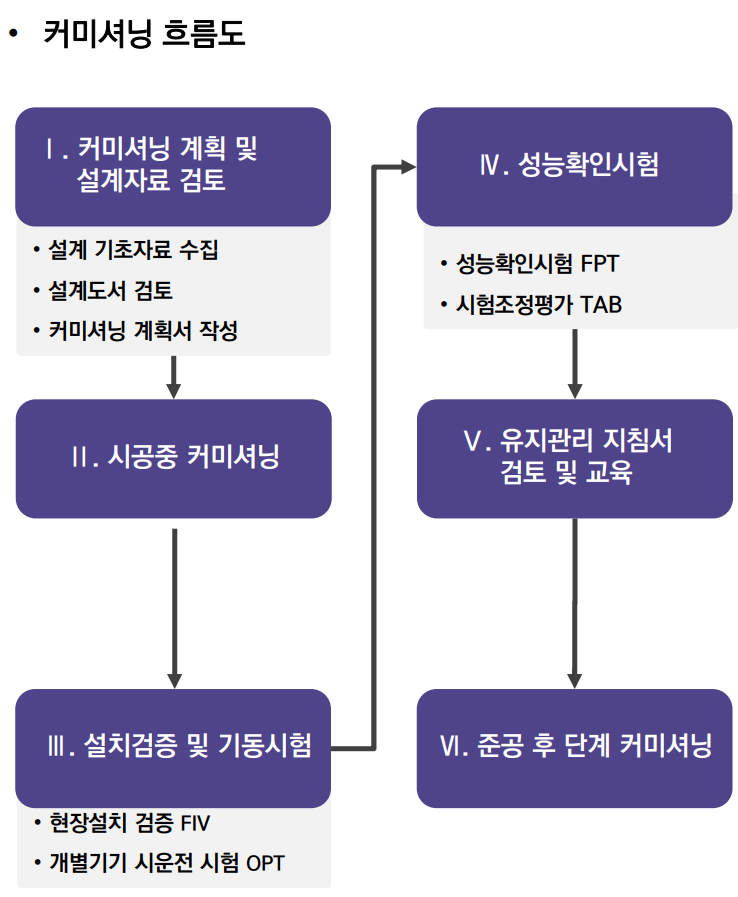
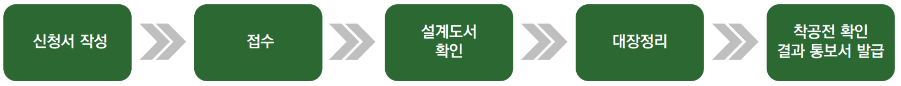
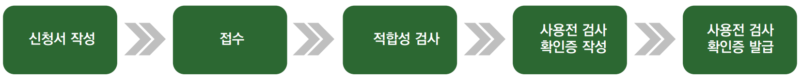

01
Fire Protection Design소방시설 설계업
소방분야 화재 안전과 성능 입증으로 국민의 생명을 존중하며 재산을 지키는 최상의 목표를 추구합니다. 풍부한 경험과 전문 기술력을 바탕으로 최고의 파트너십을 준비합니다.
전문소방시설 설계업
모든 특정소방대상물에 설치되는 소방시설을 설계합니다.
일반소방시설 설계업 — 기계분야
- 모든 아파트에 설치되는 기계분야 소방시설
- 연면적 30,000㎡(공장 10,000㎡) 이상을 포함한 특정소방대상물의 기계분야 소방시설 설계
- 위험물 제조소 등에 설치되는 기계분야 소방시설 설계
기계 및 전기분야 범위
소화기구, 옥내소화전, 스프링클러, 간이스프링클러, 물분무소화, 옥외소화전, 피난기구, 소화용수, 소화수조·저수조, 제연, 연결송수관, 연결살수 및 연소방지 설비와 이에 부설되는 전기시설을 다룹니다.
02
Fire Protection Supervision소방공사 감리업
화재 안전과 소방시설 성능을 입증하고, 전문적인 감리를 통해 국민의 생명과 재산을 보호합니다.
전문소방공사 감리업
모든 특정소방대상물에 설치되는 소방시설공사를 감리합니다.
일반소방공사 감리업 — 기계분야
- 모든 아파트의 기계분야 소방시설 감리(제연설비 제외)
- 연면적 30,000㎡(공장 10,000㎡) 미만 특정소방대상물의 기계분야 소방시설 감리
- 위험물 제조소 등에 설치되는 기계분야 소방시설 감리
일반소방공사 감리업 — 전기분야
- 아파트에 설치되는 전기분야 소방시설 감리
- 특정소방대상물과 위험물 제조소 등에 설치되는 전기분야 소방시설 감리
03
Energy Diagnosis에너지진단 사업
에너지효율 향상과 온실가스 저감을 통해 저탄소 녹색성장의 기반을 구축하고, 에너지절약 및 기후변화 대응을 선도합니다.
에너지진단 목적
온실가스 감축 규제 강화와 에너지가격 상승에 대응하여 시설의 에너지 사용현황을 분석하고 지속 가능한 절감 방안을 제시합니다.
진단 내용 및 효과
연도별 진단업체 및 최근 실적
에너지진단 계측장비 보유현황





04
Energy Service CompanyESCO 사업
에너지절약 전문기업이 시설 개선에 투자하고, 그 결과로 발생하는 에너지절약 효과를 보증하는 사업입니다.
ESCO 사업 소개
에너지사용자가 기존 에너지 사용시설을 교체하거나 보완하고자 할 때 ESCO가 에너지절약시설에 투자하고, 여기서 발생하는 절감효과를 보증합니다.
ESCO 투자사업 흐름도
05
Energy Use Planning에너지사용계획 사업
에너지이용효율 극대화와 에너지 수급체계 구축을 통해 에너지 저소비형 사회의 실현을 지원합니다.
에너지사용계획 수립
일정 규모 이상의 에너지를 사용하는 사업이나 시설은 사전에 에너지사용계획을 수립하고 협의합니다. 이를 통해 관련 시설을 적기에 확충하고 효율적인 에너지 수급체계를 구축합니다.
최근 3년간 용역 실적
| 연도 | 업체수 | 주요 용역 |
|---|
| 2022 | 12 | LG화학 대산 P4·PBAT, K-IPA, C3IPA Expansion, LG화학 구미공장, 충북보은테크노밸리, NI MATTE공장, SK airgas M15 ph2, 롯데케미칼 여수·대산공장 등 |
| 2023 | 12 | 2차전지 재활용 공장, P3 LCO2, N-1, HSC Cosmos, 광양염포 일반산업단지, 성일하이텍 3공장, EVERGREEN, U-Project, Nexlene 2nd Value-up 등 |
| 2024 | 5 | 대웅바이오 생물학제제 신공장, 두산테스나 평택브레인시티, EVBM 용매추출, 오창과학산업단지 재생계획, 에코프로머티리얼즈 4캠퍼스 |
06
Testing · Adjusting · BalancingT.A.B 커미셔닝 사업
건물의 공기조화 및 기계설비 시스템이 설계 의도에 맞는 성능을 발휘하도록 시험하고 조정하며 검증합니다.
T.A.B
Testing(시험), Adjusting(조정), Balancing(평가)의 약어로, 건물 내 모든 공기조화 시스템이 설계에서 의도한 기능을 발휘하도록 점검·조정하는 업무입니다.
- 시험: 각 장비의 정량적인 성능 판정
- 조정: 터미널 기구의 풍량과 수량을 적절하게 조정
- 평가: 설계치에 따라 분배 시스템에 요구 유량이 흐르도록 배분
커미셔닝
설계부터 공사 완료까지 전 과정에서 기계설비와 관련 시스템의 계획·설계·시공·성능시험을 확인하고, 입주 후에도 발주자의 요구 성능이 유지되는지 검증하여 문서화합니다.
T.A.B 흐름도


T.A.B 기대효과
- 공기 분배 불균형과 누설을 줄여 에너지 10~20% 절감
- 환기 성능 향상을 통한 쾌적한 실내환경 조성
- 공조장비 수명 연장과 개보수 비용 절감
- 시험 조건 충족을 통한 정확한 데이터 확보
07
Smoke Control T.A.B소방제연 T.A.B 사업
제연설비의 유량과 압력, 운전상태를 측정·조정하여 화재 시 요구되는 제연 성능을 확보합니다.
소방제연 T.A.B
발주 설계도서를 검토하고 시공사·감리단과 사전 협의를 진행해 설계 적정성을 판단합니다. 제연팬의 운전상태, 유량과 압력 등을 측정하고 문제 요소를 찾아 조정합니다.
주요 용역
- 급기가압 전실 제연 TAB
- 거실 제연 TAB
- 성능설계 심의 내용 이행 확인
- 사전 재난 영향성 검토 이행 확인
- HOT SMOKE TEST
- DOOR FAN TEST
- 소방 준공 사전 점검
08
Mechanical Performance Inspection기계설비 성능점검 사업
건축물 기계설비의 성능 확보와 효율적인 관리를 위해 설비를 점검하고 진단합니다.
사업 소개
기계설비공사의 착공 전·사용 전 검사와 기계설비 유지관리기준에 따른 성능점검을 수행합니다.
성능점검 기대효과
착공 전·사용 전 검사 및 확인 절차


건축물 등에 설치된 기계설비의 안전과 성능 확보를 위해 기술기준 준수 여부와 설계도서에 따른 적합한 시공 여부를 점검합니다.
09
Tunnel Smoke Control Verification터널 제연설비 성능검증 사업
화재 시 설계된 임계풍속 또는 배연풍량 이상으로 제연설비의 성능이 발휘되는지 검증합니다.
과업 수행
작업 사진 대지